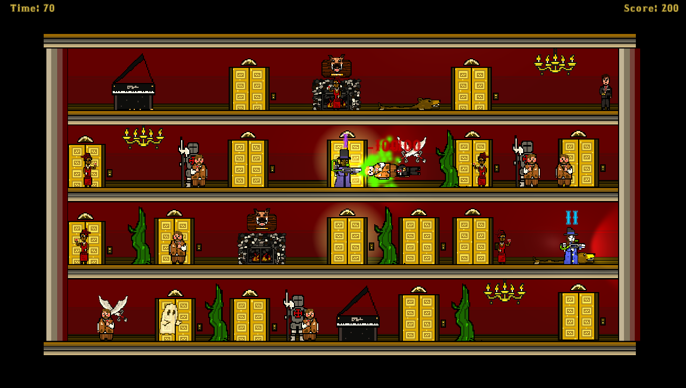
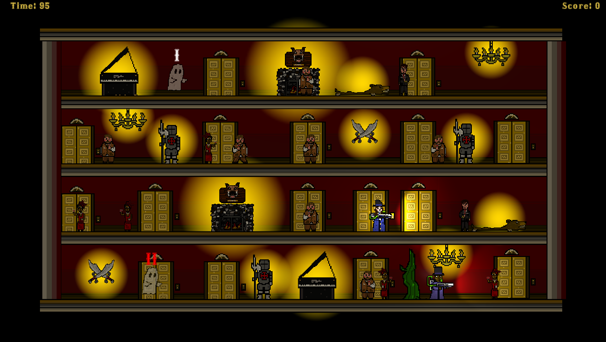
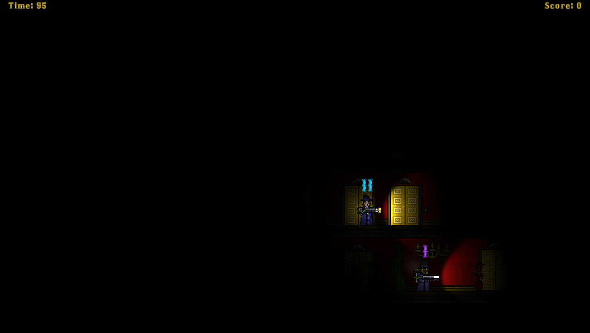
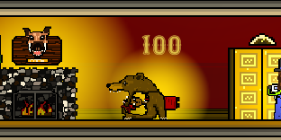
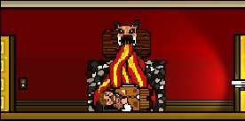
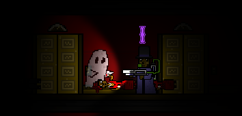

Prepare to be spooked! A Spooky Night In is an asymmetric multiplayer game that pits hunters against ghosts in a 2D dollhouse style mansion. Ghosts must possess and kill party guests using the environment, while hunters must find and kill the ghosts while minimizing the killing of the party guests.
This game utilized two monitors where each team of two would look on their own monitor. One team would play as ghosts, and the other as hunters. The team playing the hunters would have their vision limited by the lights turning on and off, while the ghosts team would be able to see everything at all times.
This game was created in my game development class at the University of Michigan. It was completed in 7 weeks and shown at a showcase at the end of the semester. People had a lot of fun playing it, and our game was voted 3rd out of 24 games!